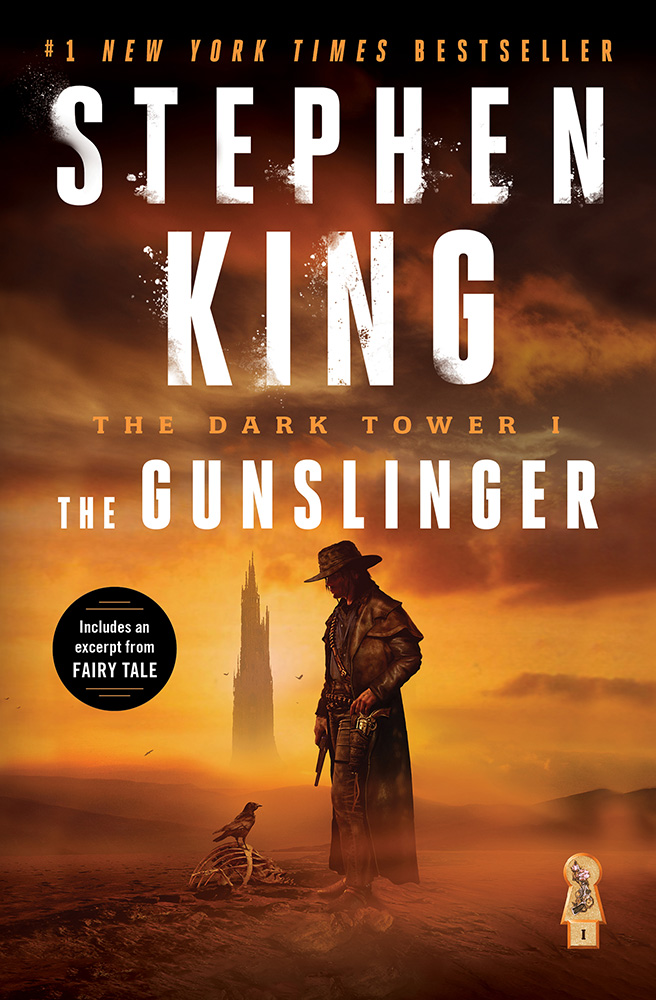

Stephen King - The Dark Tower Blog
| Published Year | Description | Image |
|---|---|---|
| June 2003 |
The Dark Tower I: The Gunslinger (Revised)
The Man in Black fled across the desert, and the gunslinger followed. So begins Book I of Stephen King’s iconic fantasy series, The Dark Tower. Part sci-fi novel, part futuristic dystopia, part spaghetti Western, and part high fantasy vision, The Gunslinger tells the story of Roland Deschain, Mid-World’s last gunslinger, who is tracking an enigmatic magician known only as the man in black. Following his quarry across the demon-infested Mohaine Desert, Roland confronts a mad preacher woman and her murderous flock, holds palaver with a speaking demon, and finally befriends a young boy from our world named Jake Chambers. Jake joins Roland on his quest, but while Roland travels with his young companion Jake, the man in black travels with Roland’s soul in his pocket. The 2003 revised edition of The Gunslinger contains the essay "On Being Nineteen (And a few other things)" by Stephen. |
 |
| May 1987 |
The Dark Tower II: The Drawing of the Three
After his final confrontation with the Man in Black in a remote mountain Golgotha, an exhausted Roland awakes on the beach of the Western Sea and is immediately attacked by a shoreline monster known as a lobstrosity. Roland kills the clawed creature, but not before it bites off two of his fingers and half of one big toe. Fighting off the delirium brought on by the lobstrosity’s poison, Roland forces himself along the beach where he discovers three freestanding doorways that lead into our world. The first opens onto New York, 1987, and the mind of a heroin addict called Eddie Dean. The second leads to 1964 and the divided personality of Odetta Holmes/Detta Walker, an African American woman who has lost the bottom half of her legs but gained a second, psychotic self. The third door leads to 1977 and the mind of a psychopath called The Pusher, the very criminal responsible for Odetta’s injuries. Roland’s task is to make Eddie and Odetta into gunslingers before raging Detta destroys them all, and before the Pusher can continue his bloody killing spree. |

|
| August 1991 |
The Dark Tower III: The Waste Lands
Several months have passed, and Roland’s two new tet-mates have become proficient gunslingers. Eddie Dean has given up heroin, and Odetta’s two selves have joined, becoming the stronger and more balanced personality of Susannah Dean. But while battling The Pusher in 1977 New York, Roland altered ka by saving the life of Jake Chambers, a boy who—in Roland’s where and when—has already died. Now Roland and Jake exist in different worlds, but they are joined by the same madness: the paradox of double memories. Roland, Susannah, and Eddie must draw Jake into Mid-World then follow the Path of the Beam all the way to the Dark Tower. But nothing is easy in Mid-World. Along the way our tet stumbles into the ruined city of Lud, and are caught between the warring gangs of the Pubes and the Grays. The only way out of Lud is to wake Blaine the Mono, an insane train that has a passion for riddling, and for suicidal journeys. |

|
| June 2003 |
The Dark Tower I: The Gunslinger (Revised)
The Man in Black fled across the desert, and the gunslinger followed. So begins Book I of Stephen King’s iconic fantasy series, The Dark Tower. Part sci-fi novel, part futuristic dystopia, part spaghetti Western, and part high fantasy vision, The Gunslinger tells the story of Roland Deschain, Mid-World’s last gunslinger, who is tracking an enigmatic magician known only as the man in black. Following his quarry across the demon-infested Mohaine Desert, Roland confronts a mad preacher woman and her murderous flock, holds palaver with a speaking demon, and finally befriends a young boy from our world named Jake Chambers. Jake joins Roland on his quest, but while Roland travels with his young companion Jake, the man in black travels with Roland’s soul in his pocket. The 2003 revised edition of The Gunslinger contains the essay "On Being Nineteen (And a few other things)" by Stephen. |